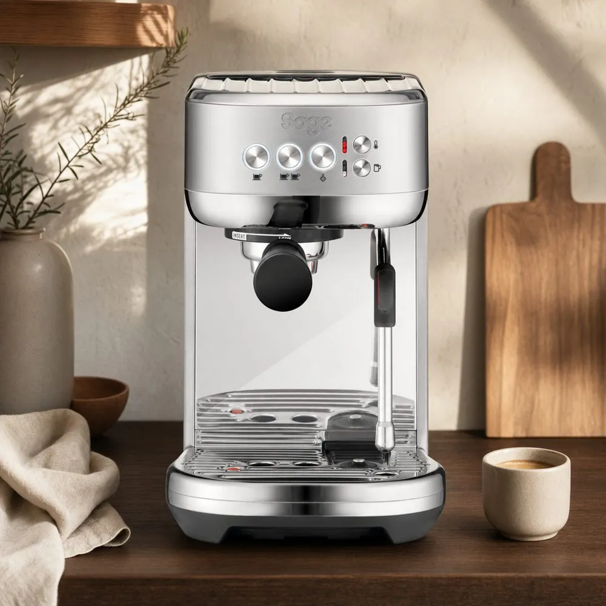

Der Einstieg in echten Espresso muss keine 1.000 € kosten, aber unter den günstigen Maschinen liegen Welten zwischen „schmeckt wie im Café" und „teurer Kapselersatz". Wir vergleichen die fünf beliebtesten Einsteigermodelle in Deutschland mit Punktetabelle und klaren Kriterien.
| Sage Bambino Plus Unsere Empfehlung | Gastroback Piccolo Pro M | De'Longhi Dedica EC685 | WMF Lumero | Solis Barista Perfetta Plus | |
|---|---|---|---|---|---|
| Gesamtnote | 4,0 Unsere Empfehlung | 3,8 Milch-Komfort | 3,5 Preis-Leistungs-Tipp | 3,5 Geheimtipp | 3,4 |
| Preis* | |||||
| Heizsystem | ThermoJet | Zweikreis-Thermoblock (Kaffee + Milch getrennt) | Thermoblock | Thermoblock | Thermoblock |
| Aufheizzeit | ca. 3 Sekunden | ca. 2 Minuten (laut Anleitung) | ca. 40 Sekunden | 30 bis 40 Sekunden | ca. 1 Minute |
| Siebträger | 54 mm | 51 mm; Siebe für 1/2 Tassen und ESE-Pads | 51 mm (Drucksieb) | 51 mm; 3 Siebeinsätze (1 Tasse, 2 Tassen, ESE-Pads) | 54 mm |
| Milchschaum | automatisch oder manuell | vollautomatisch (integrierter Aufschäumer, alle Milchsorten) | manuell (Aufschäumhilfe) | manuell (Dampfdüse) | manuell (Profi-Lanze) |
| Stromkosten pro Jahr (Schätzung) | ca. 4 € (ca. 11 kWh) | ca. 10 € (ca. 27 kWh) | ca. 6 € (ca. 16 kWh) | ca. 6 € (ca. 16 kWh) | ca. 8 € (ca. 21 kWh) |
| Für wen? | Cappuccino-Fans, Ungeduldige mit Qualitätsanspruch | Milchgetränke-Fans mit Komfortwunsch, kompakte Küchen | bester Preis-Leistungs-Deal zum Reinschnuppern | Design-Fans mit kleinem Geldbeutel | Einsteiger, die viel einstellen wollen |
*Marktpreise Deutschland, Preisprüfung 17. November 2026. Tagesaktuelle Preise beim Händler prüfen. Genannt ist der Preis aus unserer automatischen Prüfung beim angegebenen Shop (hervorgehobener Knopf). Bei OTTO kann der Preis abweichen. Amazon-Preise zeigen wir nicht; der Amazon-Link führt zum aktuellen Angebot. Stromkosten: Schätzung für 2 Espresso und 1 Cappuccino pro Tag, Maschine nur dafür eingeschaltet, 37 ct/kWh (Methode: Stromverbrauch & Kosten). Alle fünf Maschinen benötigen eine separate Kaffeemühle (oder frisch gemahlenen Kaffee). Empfehlungen im Mühlen-Vergleich. Produktabbildungen sind KI-generierte Illustrationen zur Veranschaulichung, keine Herstellerfotos.
| Kriterium (Gewicht) | Bambino Plus | Piccolo Pro M | Dedica | Lumero | Solis |
|---|---|---|---|---|---|
| Espressoqualität (40 %) | 4,1 | 3,8 | 3,3 | 3,6 | 3,5 |
| Milchschaum (15 %) | 4,4 | 4,2 | 3,2 | 3,0 | 3,4 |
| Bedienung & Alltag (15 %) | 4,3 | 4,1 | 3,8 | 3,6 | 3,3 |
| Verarbeitung (15 %) | 3,4 | 3,3 | 3,2 | 3,7 | 3,5 |
| Preis-Leistung (15 %) | 3,8 | 3,9 | 4,5 | 3,5 | 2,9 |
| Gesamtnote | 4,0 | 3,8 | 3,5 | 3,5 | 3,4 |

Die Bambino Plus ist die Maschine, die Einsteigern am schnellsten gute Ergebnisse liefert: Das ThermoJet-Heizsystem ist in rund drei Sekunden betriebsbereit, der 54-mm-Siebträger arbeitet mit ordentlichem Anpressdruck, und die automatische Milchschaumfunktion nimmt Anfängern die größte Hürde ab. Im Blindtest von ARD/SWR Marktcheck lag sie geschmacklich vor allen Konkurrenten dieser Preisklasse.
Die Komfort-Überraschung für rund 225 €: Als eine der wenigen Einsteigermaschinen bringt die kompakte Gastroback einen integrierten, vollautomatischen Milchaufschäumer mit, der auch Milchalternativen zuverlässig schäumt. Das Zweikreis-Thermoblock-System (getrennte Kreise für Kaffee und Milch) brachte ihr im Einzeltest von Haus & Garten Test (02/24) die Note 1,3 („sehr gut“) ein, mit Bestnoten für Kaffeetemperatur und Zubereitungsdauer. Die Grenzen: 51-mm-Siebträger mit überschaubarem Zubehörmarkt, keine manuelle Dampflanze zum Latte-Art-Lernen und ein Gehäuse mit viel Kunststoff. Wer Cappuccino auf Knopfdruck will, ohne das Schäumen zu lernen, bekommt hier viel Komfort fürs Geld.
Unser Preis-Leistungs-Tipp der Einsteigerklasse: Mit einem Preis am unteren Ende des Feldes (zuletzt geprüfter Preis in der Tabelle oben) und nur 15 cm Breite ist die Dedica ein besonders günstiger und kompakter Weg zum Siebträger; kein anderes Modell liefert pro Euro so viel Espresso. Den Tagespreis bei Amazon zeigt dir der Amazon-Link. Die Kompromisse bleiben: Das 51-mm-Drucksieb kaschiert Mahlgrad-Fehler (gut für den Start, schlecht fürs Lernen), und im ARD/SWR-Geschmackstest landete sie hinter der Konkurrenz. Wer günstig Espresso mit Crema will und später upgraden möchte, macht hier nichts falsch.
Der Überraschungszweite der ARD/SWR-Blindverkostung: Die nur 14 cm schmale Lumero liefert einen Espresso, der deutlich teurere Konkurrenz geschmacklich schlug. Dazu Cromargan-Edelstahl, 30 bis 40 Sekunden Aufheizzeit und drei Siebeinsätze: je ein Sieb für 1 Tasse, für 2 Tassen und für ESE-Pads (vorportionierte Kaffee-Pads). Der Siebträger misst 51 mm im Durchmesser; Zubehör wie bodenlose Siebe ist dafür seltener als beim 54/58-mm-Standard. Die Grenzen: kein PID, wenig Kontrolle über Temperatur und Druck, einfache Dampfdüse. Zum Reinschnuppern ohne Risiko ist sie unter den günstigen Einsteigermodellen die geschmacklich beste Wahl.
Die Schweizerin bietet in dieser Klasse die meisten manuellen Eingriffe: Brühtemperatur in Stufen wählbar, Manometer zur Druckkontrolle, ordentliche Dampflanze. Im Geschmackstest Platz drei: solide, aber angesichts des ähnlichen Preises zur Bambino Plus ist sie vor allem für alle interessant, die von Anfang an tüfteln wollen statt Knöpfe zu drücken.
| Du bist… | Unsere Empfehlung |
|---|---|
| Cappuccino-/Latte-Trinker und willst schnell gute Ergebnisse | Sage Bambino Plus |
| Cappuccino auf Knopfdruck für rund 225 € | Gastroback Design Espresso Piccolo Pro M |
| Um 220 € den besten Geschmack mitnehmen | WMF Lumero |
| Maximale Leistung pro Euro (Preis-Leistungs-Tipp) | De'Longhi Dedica EC685 |
| Tüftler, der Temperatur & Druck selbst steuern will | Solis Barista Perfetta Plus |
| Bereit, gleich inkl. Mühle zu denken (~680 € gesamt) | Mittelklasse-Vergleich ansehen |
Unsere Empfehlung 2026 ist die Sage Bambino Plus (Redaktionswertung 4,0/5): in rund 3 Sekunden betriebsbereit, automatischer Milchschaum und Geschmackssieger der ARD/SWR-Blindverkostung. Preis-Leistungs-Tipp ist die De'Longhi Dedica EC685, Komfort-Tipp mit Milchschaum-Automatik die Gastroback Design Espresso Piccolo Pro M. Die zuletzt geprüften Preise stehen in der Vergleichstabelle.
Gute Einsteiger-Siebträger kosten je nach Modell rund 150 bis 450 € (zuletzt geprüfte Preise in der Vergleichstabelle). Realistisch solltest du inkl. Mühle und Zubehör (ca. 50 €) mit rund 400 bis 700 € Gesamtbudget rechnen. Details in der Kaufberatung.
Beide schäumen Milch automatisch. Die Bambino Plus liefert den besseren Espresso (ARD/SWR-Geschmackssieger) und ist in 3 Sekunden bereit, kostet aber rund doppelt so viel. Die Gastroback punktet mit Zweikreis-Thermoblock, Aufschäumer für alle Milchsorten und einem Preis von rund 225 €. Qualitätsanspruch: Bambino Plus. Komfort pro Euro: Gastroback.
Ja, frisch und fein gemahlener Kaffee macht mehr Geschmacksunterschied als die Maschine selbst. Entweder eine Espressomühle einplanen (Empfehlungen und Preise im Mühlen-Vergleich) oder frisch für Espresso gemahlenen Kaffee vom Röster kaufen.
Für Espresso mit Crema und Milchgetränke: ja. Für das volle Geschmackspotenzial und echtes Barista-Lernen: eher nicht, denn das Drucksieb der Budget-Klasse verzeiht viel, verhindert aber auch Feintuning.
Als Startrezept gelten 25 bis 30 Sekunden für ein Brühverhältnis von 1:2, also z. B. 18 g Kaffeemehl auf 36 g Espresso in der Tasse. Läuft der Bezug deutlich schneller, feiner mahlen; läuft er deutlich langsamer, gröber mahlen.
Sauer heißt meist unterextrahiert: feiner mahlen, etwas heißer brühen, länger beziehen. Bitter heißt überextrahiert: gröber mahlen, kürzer beziehen. Mit Waage, festem Rezept (1:2 in 25 bis 30 s) und frischen Bohnen verschwinden 90 % dieser Probleme.
Nicht sinnvoll: Filterkaffee ist viel zu grob gemahlen und liefert dünnen Espresso ohne Crema. Du brauchst eine Espressoröstung, so fein gemahlen, dass der Bezug 25 bis 30 Sekunden dauert, am besten frisch aus einer Espressomühle.
Mühle (siehe Mühlen-Vergleich) oder frisch gemahlener Kaffee, Tamper (falls nicht ordentlich beiliegend), Abschlagbehälter und Milchkännchen. Realistisch: 50 bis 250 € Zubehörbudget. Details auf der Zubehör-Seite.
Die Lernkurve ist überschaubar: Mit Waage, Startrezept und 1 bis 2 Wochen Übung sitzt der Espresso. Maschinen wie die Bambino Plus nehmen mit automatischem Milchschaum und fester Brühtemperatur die größten Hürden ab.
Weil roastmarket aktuell sehr gute Preise bietet und im Reparaturfall deutlich mehr Service als Amazon: Deutschlands größter Kaffee-Fachhändler hat eine eigene Fachwerkstatt und betreut auch Premium-Marken über die Gewährleistung hinaus. Dennoch empfiehlt es sich, vor dem Kauf auch bei Amazon kurz zu schauen, denn die Preise ändern sich täglich: Siebträgermaschinen bei Amazon*.